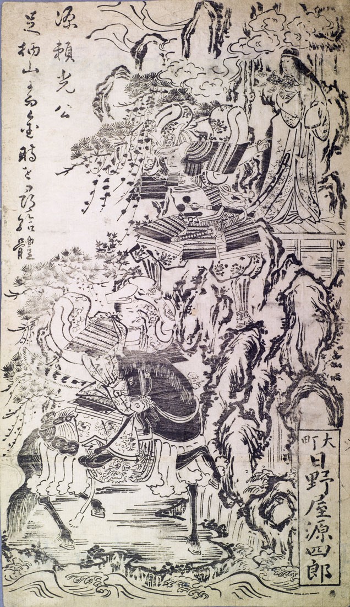

山姥。坂田金時の母。髪を足元まで伸ばし、額に帯を巻いている。右手に栗のような実をつけた木の枝を持ち、源頼光と坂田金時がいる方を眺めている。
出典：親書誌：U426_nichibunken_0135：源頼光公；ミナモトヨリミツコウ／日付：2009／資源識別子：U426_nichibunken_0135_0001_0000
Copyright (c)2010- International Research Center for Japanese Studies, Kyoto, Japan. All rights reserved.